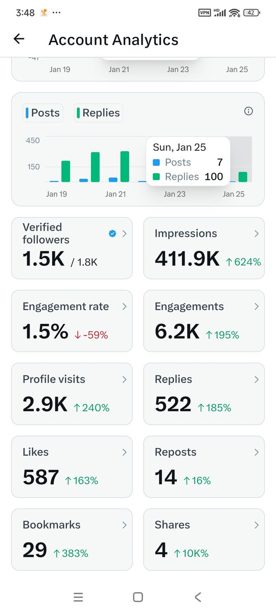

mycbxzd
@axzamyzed
@zawe6hWtCAEkHHe 关啦

Kop
@zawe6hWtCAEkHHe
蓝V互关再来一篇！
很多人打着蓝V互关在骗粉，我希望大家既然写了蓝V互关贴就要诚信一点！
因为我每天都会发日常和干货，我这里的蓝V都很活跃，大家可以来借楼互关！一起成长！
因为回关有上限，如果我漏掉了哪一位宝贝，大家可以DM我！或评论区喊我，只要是蓝V我都会诚信回关！
#蓝V #FollowBack https://t.co/7pxNs1GeAq